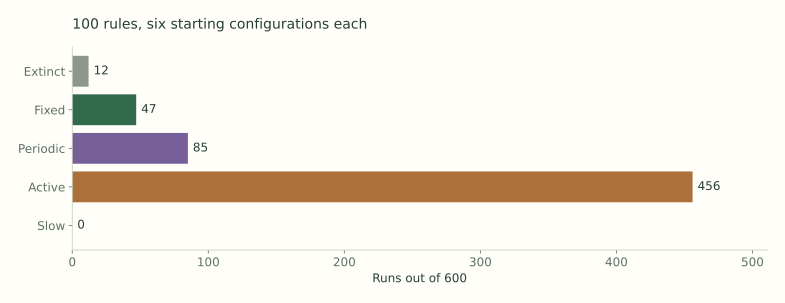
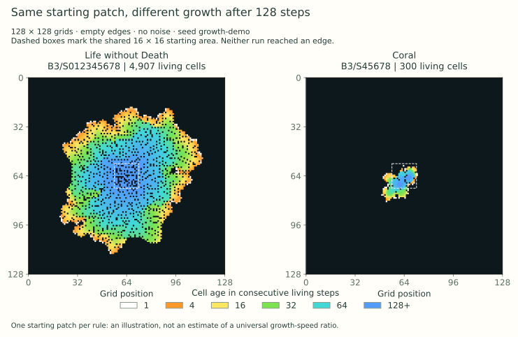

This is an AI-assisted draft for George Tsoukalas's initial assignment. It explains what was tested, what happened, and how to repeat the experiments.
What this project explores
This project asks how simple rules can produce different patterns across a grid. How much changes when one rule changes? Does the starting number of living cells matter more than where those cells are placed? What happens to a familiar pattern when random disturbances are added?
The simulator uses a two-dimensional grid where each cell is alive or dead. It covers Conway's Game of Life, other rules of the same kind, and Option B of the assignment: adding noise. This project includes 1,992 recorded simulation runs: 600 testing random rules, 50 comparing Life and HighLife, 56 taking a closer look at one rule, 960 testing how patterns hold up under noise, 324 adding noise to random starting grids, and 2 comparing growth using age colors. The examples in the known-pattern catalog are not included in this total.
The website lets you draw cells, change the rules, and watch what happens. It also has results for all 100 sampled rules, graphs of each run, replay links, and downloadable data. The simulator runs entirely in the browser.
What was built and how it works
A cell has eight neighbors: the cells next to it, above and below it, and diagonally around it. At each step, it counts how many of them are alive. Its next state depends on that count and whether it is currently alive. These are called outer-totalistic rules: the count matters, but the particular arrangement of those neighbors does not.
In Conway's Life, a dead cell becomes alive if it has exactly three living neighbors. A living cell stays alive with two or three neighbors; otherwise, it dies. This is written B3/S23, where B means birth and S means survival. HighLife adds one condition: dead cells are also born with six neighbors, giving B36/S23. There are nine possible neighbor counts, from 0 to 8, and each can be allowed or disallowed for birth and survival. That gives 2^18 = 262,144 rules.
One step updates the whole grid and is also called a generation. The code stores dead cells as 0 and living cells as 1 in a Uint8Array, an array of small integers. It keeps two grids: one to read the current state and another to write the next state. After every cell has been calculated, it swaps the grids. This makes all cells update together, so the order in which the code visits them cannot affect the result.
To avoid repeating work, the code records where each cell's neighbors are once when the grid is created. It counts neighbors by adding groups of three cells across the surrounding rows, then subtracts the center cell. A table with 18 entries stores the birth and survival choices for the selected rule.
The grid has two options for its edges. With wrapping edges, the left and right sides connect, and so do the top and bottom. A glider can cross one edge and reappear on the other. With empty edges, everything outside the grid stays dead, while cells on the edge still follow the usual rules. Every experiment uses a fixed-size grid and records which edge setting was used.
You can draw or erase cells, use the keyboard to edit them, and run, pause, or advance the simulation one step at a time. Other controls change the speed, grid size, starting density, rule, and amount of noise. Density means the fraction of cells that are alive. The lab also includes known patterns to try.
Reset returns to the saved starting point. Drawing or changing the rule, noise, or edge setting starts a new run at step zero. Saving a JSON snapshot lets you resume from the current step, including the same future random changes. Saving a PNG gives you an image of the grid.
The lab can also color cells by age. New cells start white and gradually turn orange, yellow, green, cyan, and blue as they stay alive. The color key is fixed across rules, so the same color means the same age in every run. Pointing to a cell shows its exact age. The single-color option remains available. Age only changes the display; it does not affect births, survival, noise, or how runs are classified.
New snapshots preserve cell ages, and saved images include the color key. Older snapshots still load, but they do not contain earlier age information. For those files, the lab labels when age tracking begins. The starting-area control can place random cells in a small center patch, leaving room to watch growth spread outward. Its density setting then applies within that patch.
The website and the script that runs batches of experiments use the same simulation code. Random runs use a seed: a short text label that determines the sequence of random choices. Using the same seed and settings reproduces the same run. The starting grid and the added noise use separate random sequences, so changing the noise does not change the starting grid. The code uses the Mulberry32 random number generator, with each text seed converted into a number.
Life and HighLife
Life and HighLife were each tested at five starting densities: 5%, 15%, 30%, 50%, and 75%. Each density used five seeds, named density-a through density-e. Every run used a 64 × 64 grid with wrapping edges and lasted 500 steps. Both rules started from exactly the same grids, making it easier to see the effect of changing the rule. The seeds were also reused across densities, so those starting grids are related rather than fully independent samples.
| Rule | Starting density | Average density after 500 steps |
|---|---|---|
| B3/S23 | 5.00% | 0.26% |
| B3/S23 | 15.00% | 6.53% |
| B3/S23 | 30.00% | 7.21% |
| B3/S23 | 50.00% | 4.54% |
| B3/S23 | 75.00% | 2.65% |
| B36/S23 | 5.00% | 0.26% |
| B36/S23 | 15.00% | 3.15% |
| B36/S23 | 30.00% | 2.81% |
| B36/S23 | 50.00% | 4.34% |
| B36/S23 | 75.00% | 2.77% |

The graph shows the average of the five runs at each density. Its error bars show one sample standard deviation, which describes how much the results varied between seeds.
At a 30% start, Life ended with an average density of 7.21%, compared with 2.81% for HighLife. Allowing more births did not leave more living cells in these runs. Extra births change the neighbor counts on later steps, which can lead to more deaths as well. More tests would be needed to tell how consistently this happens.
The known patterns give clearer examples of different behaviors:
- A block stays exactly the same.
- A blinker alternates between two shapes, returning to its starting shape every two steps.
- A glider returns to the same shape after four steps, but one cell farther along a diagonal.
- The R-pentomino starts with five cells and keeps changing for many steps. Its images were saved at steps 0, 50, 200, and 500.
- The HighLife replicator becomes two copies of itself after twelve steps. Later images show more copies appearing.
These examples used 96 × 96 grids with empty edges. Some activity from the R-pentomino can reach the edges, so its behavior here may differ from what would happen with unlimited space.

The HighLife starting pattern comes from David Eppstein's published pattern file. An automated test checks that the result after twelve steps matches two copies placed at the expected locations. That is direct evidence that this pattern copies itself. A grid that simply keeps changing would need closer examination before making the same claim.
Testing 100 random rules
The survey chose 100 different rules at random, using the seed george-rule-survey-v1. Each of the 262,144 rules had the same chance of being drawn, and duplicates were skipped. The sample kept rules even if they looked uninteresting or allowed birth with zero neighbors, written B0.
The code represents a rule as a number from 0 to 262143. Written in binary, its lower nine bits give the birth choices for neighbor counts 0 through 8, and its upper nine bits give the survival choices. This is how a sampled number becomes a rule.
Each rule was tested from six starting grids: densities of 10%, 30%, and 50%, each with seeds soup-a and soup-b. Every run used a 48 × 48 grid, wrapping edges, no noise, and 300 steps. All rules were given the same six starting grids.
For each run, the code recorded how many cells were alive and how many changed on each step. It also checked whether the entire grid returned to an earlier state. It compared the full cell arrangement, since two grids can have the same number of living cells without being the same pattern. With no noise, returning to an earlier state means the same sequence will repeat from then on.
The report uses late activity to describe how much a grid was still changing near the end. This is the average percentage of cells that changed on each of the last 60 steps.
Each run was assigned the first description below that fit its behavior:
- Extinct: all cells died, and the rule cannot create a living cell without living neighbors. The grid will stay empty.
- Fixed: living cells remain, but the grid has stopped changing.
- Periodic: the grid repeats a cycle longer than one step.
- Active: the grid did not repeat during the run, and at least 2% of cells changed per step on average over the last 60 steps.
- Slow: the grid did not repeat during the run, but fewer than 2% of cells changed per step on average over the last 60 steps.
B0 needs special care: it allows dead cells with no living neighbors to become alive. An empty grid can therefore fill again, so it is not counted as extinct under that rule.
A separate growth flag checks whether density was increasing near the end. The code fits a straight line to the last 60 density measurements and flags growth if the line rises by more than 0.0005 per step, or 0.05 percentage points. This only describes the end of the recorded run.
These measurements cannot identify every interesting behavior. For example, a small moving pattern could be hidden among many changing cells. Detecting movement, copying, or chaos would require additional tests. No new self-copying pattern was confirmed in the random survey.
| Outcome | Runs out of 600 |
|---|---|
| extinct | 12 |
| fixed | 47 |
| periodic | 85 |
| active | 456 |
| slow | 0 |

Most runs were still active after 300 steps. Continued change alone says little about whether a rule produces lasting structures or could perform useful calculations. The categories describe each individual run, since the same rule can behave differently from another starting grid. The experiments page shows all six runs for every rule, along with population graphs and links to replay the start or view the final step.
A closer look at B456/S01234568
This rule stood out because its six starting grids led to different outcomes. It was number 84 in the sample, with rule ID 196208. The selection method was designed to find that kind of contrast, so the follow-up explores an interesting case rather than testing a rule chosen in advance.
For repeatability, the selection score gives four points for each different outcome category, adds the difference between the highest and lowest final densities, and adds one point if both settled and still-changing runs occur. Densities are counted as fractions from 0 to 1 for this score. Rules with B0 are excluded from this selection, and ties go to the earlier rule in the sample. A high score shows varied results across starts; it does not establish that a rule is new or especially complex.
In the original survey, both 10% starts stopped changing. The four starts at 30% and 50% stayed active, with about 34% of cells changing per step near the end. This rule allows isolated living cells to survive, but a birth needs four, five, or six neighbors. That suggests one explanation: sparse grids can preserve scattered cells without creating many new ones, while denser groups keep interacting. Testing this explanation would require changing particular groups of cells and seeing how the result changes.
The follow-up used larger 64 × 64 grids and ran for 1,000 steps. It tested starting densities of 2%, 5%, 10%, 20%, 30%, 50%, and 75%, with four new seeds, detail-a through detail-d. Both edge settings were tested, giving 56 runs in total.
All sixteen runs at 2% and 5% stopped changing. All thirty-two runs at 20% and above stayed active. At 10%, the starting arrangement made a clear difference:
| Edges | Seed | Outcome | Steps per cycle | Final density | Late activity |
|---|---|---|---|---|---|
| Wrapping | detail-a | active | No repeat found | 72.09% | 33.93% |
| Wrapping | detail-b | active | No repeat found | 71.09% | 33.92% |
| Wrapping | detail-c | periodic | 120 | 12.87% | 0.60% |
| Wrapping | detail-d | periodic | 8 | 12.48% | 0.44% |
| Empty | detail-a | active | No repeat found | 70.61% | 29.78% |
| Empty | detail-b | active | No repeat found | 71.19% | 30.53% |
| Empty | detail-c | periodic | 30 | 12.82% | 0.46% |
| Empty | detail-d | periodic | 8 | 12.40% | 0.29% |

For seed detail-c at 10%, the whole grid repeated every 120 steps with wrapping edges and every 30 steps with empty edges. The arrangement of cells and the edge setting both mattered; knowing the starting density was not enough to predict the outcome.
These cycles were confirmed on the grids used here. They do not establish that an isolated pattern would repeat the same way on an unlimited grid. The mixed results around 10% make that range worth exploring further, but the current sample is too small to identify a density where the behavior reliably changes.
Option B: adding random disturbances
Noise is added after each normal rule update. Every cell has a chance p of flipping: a dead cell becomes alive, or a living cell becomes dead. Each cell is checked separately, including cells in the empty background.
The six probabilities are 0, 0.0001, 0.0005, 0.001, 0.005, and 0.01. For example, p = 0.0001 gives each cell a 0.01% chance of flipping on each step. Across a 64 × 64 grid, that averages about 0.41 flips per step.
The first noise experiment tested the block, blinker, glider, and HighLife replicator. Each started in the center of a 64 × 64 grid with empty edges and ran for 96 steps. Each noise level used 40 seeds, named pattern:noise:0 through pattern:noise:39, with the pattern's name replacing the word pattern.
Each result was compared with a run of the same pattern without noise. That reference run was calculated once per pattern. All four reference patterns stayed within the grid during the 96 steps.
To check whether a pattern stayed intact, the code compared its living cells and their immediate neighbors with the reference at every step. The states had to agree at every checked location. Changes far away in the background were ignored.
The results use two checks. Intact throughout means the pattern matched the reference on all 96 steps. Final match means it matched at step 96, even if it had been disturbed earlier. These are strict checks: a recognizable pattern can fail if it shifts position or falls one step behind the reference.
| Chance of a flip per cell per step | Block intact | Blinker intact | Glider intact | Replicator intact |
|---|---|---|---|---|
| 0.00% | 40/40 | 40/40 | 40/40 | 40/40 |
| 0.01% | 33/40 | 34/40 | 28/40 | 3/40 |
| 0.05% | 9/40 | 13/40 | 12/40 | 0/40 |
| 0.10% | 3/40 | 6/40 | 4/40 | 0/40 |
| 0.50% | 0/40 | 0/40 | 0/40 | 0/40 |
| 1.00% | 0/40 | 0/40 | 0/40 | 0/40 |

At p = 0.0001, the block stayed intact in 33 of 40 runs, the blinker in 34, the glider in 28, and the replicator in 3. At p = 0.001, those counts fell to 3, 6, 4, and 0. None stayed intact throughout at 0.5% or 1% noise. These results show how often exact agreement was lost over 96 steps. Different run lengths or a less strict check could give different results.
The replicator's result needs some care. As it makes copies, more cells need to stay correct for the whole pattern to pass. Across the run, there were 19,155 cell checks to pass for the replicator, compared with 1,536 for the block. Checking one cell on each of ten steps counts as ten checks. The larger total gives noise more chances to cause a mismatch, so the replicator's lower success rate does not by itself show that each copy is less robust.
The graph's uncertainty bars are 95% Wilson confidence intervals, calculated from the number of successful trials out of 40. They show the sampling uncertainty in each estimated success rate. Runs with zero noise repeat the same control result, and different noise levels reuse the same random sequences. Those comparisons should therefore not be treated as fully independent experiments.
The second noise experiment used random starting grids under Life, HighLife, and the selected rule. It used the survey's six starting grids, three noise seeds for each, and the same six noise levels. Every run lasted 300 steps on a 48 × 48 grid with wrapping edges, giving 324 runs in total.
Each noisy run was compared with a control that started from the same grid without noise. The final comparison counted the percentage of cells that differed between the two grids. This is called the Hamming distance here. A value of 0% means the final grids match exactly.
| Rule | Flip probability | Average late activity | Cells different from control at the end |
|---|---|---|---|
| B3/S23 | 0.00% | 3.84% | 0.00% |
| B3/S23 | 0.01% | 4.72% | 11.38% |
| B3/S23 | 1.00% | 12.95% | 18.04% |
| B36/S23 | 0.00% | 5.58% | 0.00% |
| B36/S23 | 0.01% | 3.58% | 10.08% |
| B36/S23 | 1.00% | 19.17% | 23.79% |
| B456/S01234568 | 0.00% | 22.49% | 0.00% |
| B456/S01234568 | 0.01% | 29.30% | 43.22% |
| B456/S01234568 | 1.00% | 34.44% | 49.27% |
Each row averages the six starting grids and three noise seeds. As before, the zero-noise runs repeat the same control for a given starting grid. Late activity counts changes caused by both the normal rule and the added noise, so it cannot tell on its own whether a pattern is surviving the disturbance.
Even a little noise led to large differences from the control for the selected rule. HighLife showed another detail: at the smallest nonzero noise level, its average late activity was lower than without noise. In these runs, adding more noise did not always lead to more activity.
What the age colors reveal
I wanted a way to compare how different worlds spread, so I proposed adding color based on cell age. This makes it easier to see where cells have just appeared and where they have stayed alive for a long time.
A newly living cell starts at age 1 and gains one for each step it stays alive. If it dies, its age returns to 0. With noise enabled, age follows the state after the random flips. The colors move from white through orange, yellow, green, and cyan to blue, with marks at ages 1, 4, 16, 32, 64, and 128. Cells older than 128 stay blue, but their recorded ages keep increasing. The initial living cells also start at age 1, so a cell that survives through generation 128 has age 129.
The two age-color runs compare Life without Death, B3/S012345678, with Coral, B3/S45678. Both use the same 120 living cells inside a 16 × 16 starting patch, generated at 50% density with seed growth-demo. Each runs for 128 steps on a 128 × 128 grid with empty edges and no noise. These two illustrative runs are included in the project total. Neither reached an edge during the run.
| Rule | Living cells after 128 steps | Width × height of occupied region | Reached an edge? |
|---|---|---|---|
| Life without Death | 4,907 | 94 × 96 | No |
| Coral | 300 | 24 × 24 | No |
The occupied region is the smallest rectangle containing every living cell, including any empty space between them. In this pair, Life without Death spread much farther. Its broad bands of younger cells surround an older center. Coral has a much thinner band around its older cells. The saved measurements and age maps include the population and occupied region at every step. You can replay Life without Death and Coral in the lab.

The colors add something that the final population alone misses: they show where the recent growth happened. In the Life without Death run, the younger bands extend well beyond the starting patch. In Coral, they stay much closer to it. The recorded width and height support the same observation: by step 128, Life without Death had spread much farther from this particular start.
If cells stay alive after an area fills, the age difference between two locations tells us how many steps passed between their births. Comparing that time with the distance between them can help estimate how quickly growth moved along a particular direction. This works more directly for Life without Death, where cells cannot die when noise is off. In Coral, a young cell might instead be one that died and returned, so its color does not necessarily mark newly reached ground.
The figure suggests a difference in growth speed, but it does not establish a general speed ratio. Each rule has only one starting patch here, growth can change direction, and ages above 128 share the same color. A stronger comparison would track the advancing edge over time, repeat the same paired test with several seeds, and stop measuring before either pattern touches the grid boundary.
Questions raised by these experiments
The density experiments leave a specific question about B456/S01234568: why do sparse starts settle while denser ones keep changing? One condition worth testing is survival with zero neighbors, which lets an isolated cell remain alive. A next experiment could remove just that condition and replay the same starting grids. Comparing the outcomes would help test whether those isolated survivors explain the settled runs. This comparison has not yet been run.
The age comparison also shows why growth and activity need separate measurements. In Life without Death, every changed cell is a birth when noise is off. An old center can stay fixed while new cells appear farther out. In Coral, the number of changed cells can include both births and deaths. Two runs with similar activity could therefore differ in how far they spread or how many cells they retain. Recording births and deaths separately would make that distinction easier to investigate.
Life without Death has another useful property: without noise, it cannot return to an earlier arrangement after a birth, because that would require a cell to disappear. On a finite grid, it must eventually stop growing and settle. Its large expanding pattern at step 128 is therefore a stage in the run, rather than evidence that this finite world can grow forever. This is a consequence of the rule; the demonstration was not run until it settled.
How to repeat the experiments
To run the project locally, install Node.js 22 or later and use the commands below from the project folder. No extra JavaScript packages are needed.
npm start
npm test
npm run experiment
npm run age-demo
npm run report
npm run checkThe first command starts the website at http://127.0.0.1:4173. Leave that running and use another terminal for the remaining commands. The test command checks the calculations. The experiment command repeats the rule, density, and noise studies and saves their measurements in dist/data. The age-demo command repeats the two age-color comparisons. The report command rebuilds this report from those measurements, and the check command looks for script errors and broken local links.
The figures are already included with the website. To regenerate them, install the Python packages listed in requirements-report.txt and run python scripts/figures.py for the original figures and python scripts/age-figure.py for the added age comparison. These use Matplotlib and NumPy to create SVG and PNG images.
The data folder includes a manifest listing the settings and seeds. For the random-rule, density, follow-up, and random-grid noise studies, the saved data give the number of living cells, changed cells, and noise flips at every step.
For the known-pattern noise study, each trial records the first step where it stopped matching, whether it matched at the end, the final population, and the final difference from the control. The data also show how many trials remained intact up to each step. A blank firstMismatch value in the CSV means the pattern passed every check through step 96.
To check the simulator, its results were compared with a separate, simpler version that counts all eight neighbors directly. Those comparisons covered random rules, rectangular grids, both edge settings, and multiple steps. Other tests checked the known patterns, B0 rules, when noise is applied, repeatable random choices, and saving and resuming a noisy run. Invalid saved states and replay settings were also tested.
Additional checks repeated selected recorded runs and checked the saved counts and outcome labels. The website checks covered script syntax, page files, and local links. These checks mainly cover the calculations, data, and file structure; they do not establish that every control has been tested in every browser.
What remains uncertain
This study covers only 100 of the 262,144 rules and a small number of starting grids. Grid size, edge settings, run length, and the way rules were selected all affect what can be observed.
A grid that has not repeated after 300 or 1,000 steps may still repeat later. In fact, a fixed-size grid without noise must eventually return to an earlier state: there are only finitely many cell arrangements, and the same arrangement always produces the same next step. Population and activity help describe a run, but they do not show what kinds of calculations the system could perform.
The noise tests also answer a limited question: does a pattern still match its undisturbed version? They do not count every recognizable copy that survives elsewhere, check whether changes are passed on to later copies, or measure whether some variants reproduce more successfully than others. Those would be needed to investigate evolution through natural selection.
A possible next question is why B456/S01234568 behaves differently between starting grids near 10% density. Are particular small groups of cells responsible? One way to investigate would be to try many new seeds, look for groups associated with continued activity, and add or remove those groups in otherwise identical grids.
Another direction would be to count how many recognizable replicator copies survive noise, while accounting for how many cells are exposed to it and for how long. Both questions would help explain the observed behavior more directly. Existing research would need to be checked before claiming either question is new.
AI use and personal reflection
Bob proposed adding age coloring to help compare growth in this project. Codex wrote the simulator, chose Option B, planned and ran the experiments, wrote the tests, generated the figures, and drafted this report. Bob still needs to review the choices, understand the code, and decide which conclusions he can support before submitting it.
The assignment also asks for a response to the introductory material, what was interesting about the project, and what to learn next. Those personal reflections have not been added to this draft. The proposed questions above are starting points for Bob to consider while exploring the lab.
Sources and data
- George Tsoukalas, Emergent Complexity: Initial Assignment, supplied PDF dated September 2026.
- Introductory slides supplied by George.
- Emergent Garden, Artificial Life, assigned introductory material.
- David Eppstein, Lifelike Rules and Pattern Notation, source of the rule notation and HighLife replicator seed.
- Cary Huang (carykh), The Conway Multiverse, inspiration for the age-color display and the choice to compare Life without Death with Coral.
- Age-color demonstrations and measurements (JSON).
- Raw run summaries (CSV), pattern-noise trials (CSV), full survey (JSON), experiment manifest (JSON).